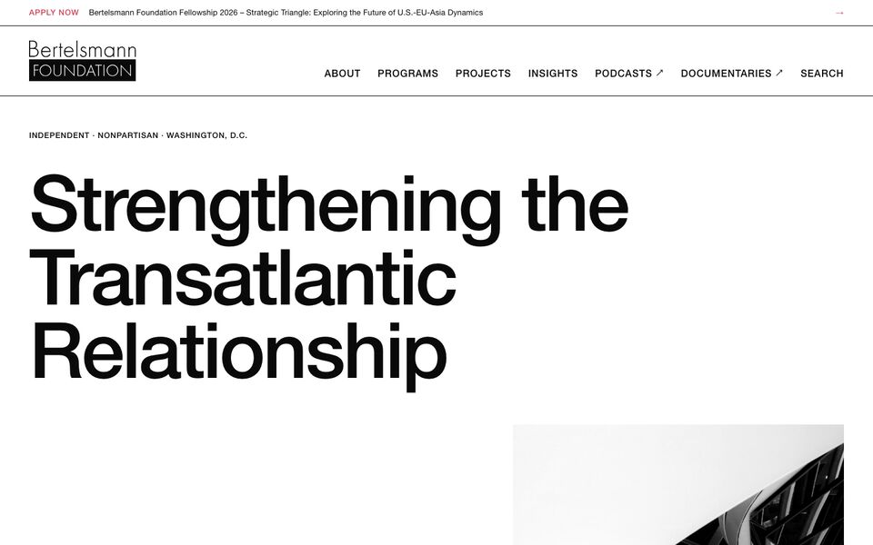
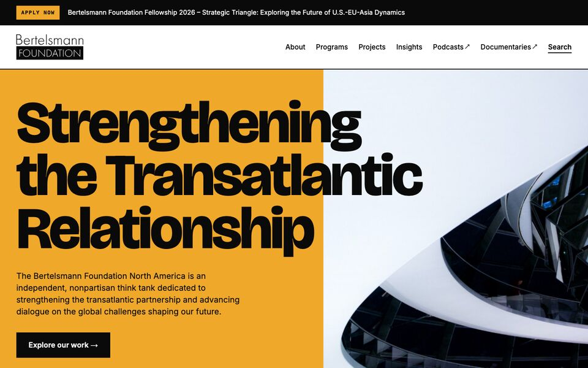
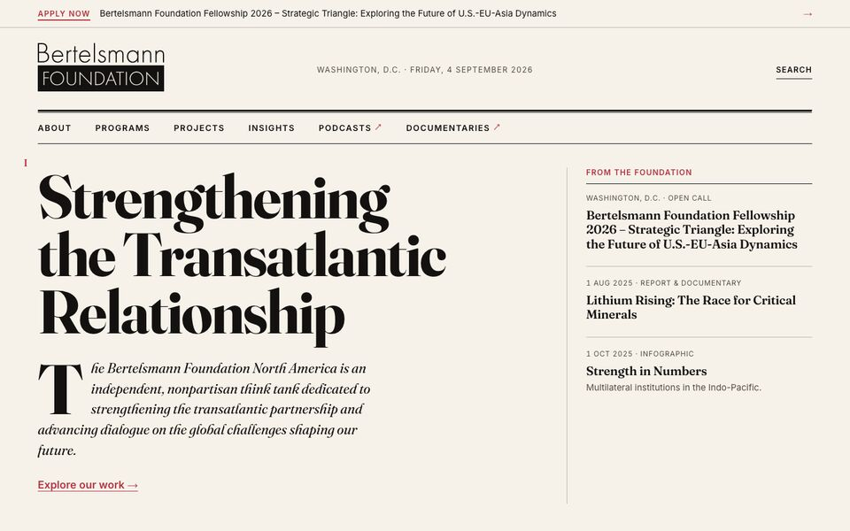
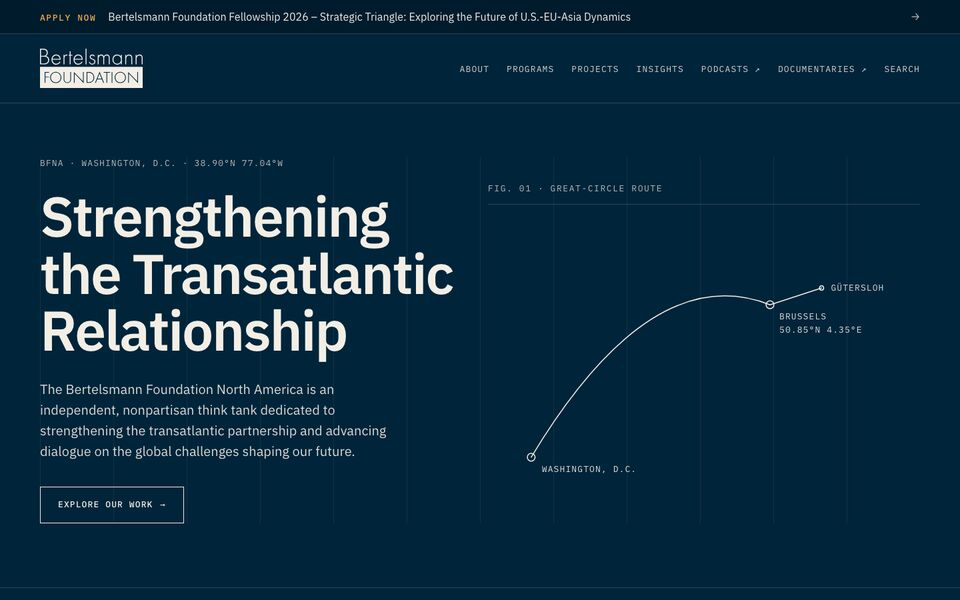
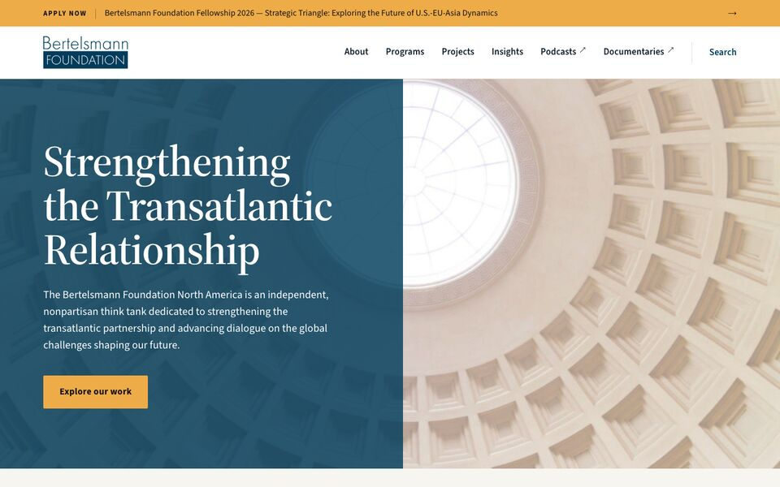

Bertelsmann Foundation North America · Homepage · Art-direction exploration · September 2026
Five directions
-
01
Swiss
Grid & Grotesk
The grid is the brand. Grotesk, black on white, numbered bands, hairlines, three flat programme hues. Objective and un-decorated.
Open →
-
02
Bold
Loud & Clear
Type as image. Poster-scale headlines, saturated colour fields in the programme hues, hard-cropped photography.
Open →
-
03
Editorial
Journal of Record
A think tank is a publisher. Serif front page on paper white, datelines, columns, double rules. Bold through scale, not colour.
Open →
-
04
Cartographic
Great Circle
The Atlantic as the brand. Navy instrument panel, monospaced coordinates, one great-circle arc as the recurring device. Dark-first.
Open →
-
05
Continuity
Civic Modern
The evolution of today's bfna.org: navy, warm ochre, the dome. Everything sharpened. The baseline to judge the other four against.
Open →